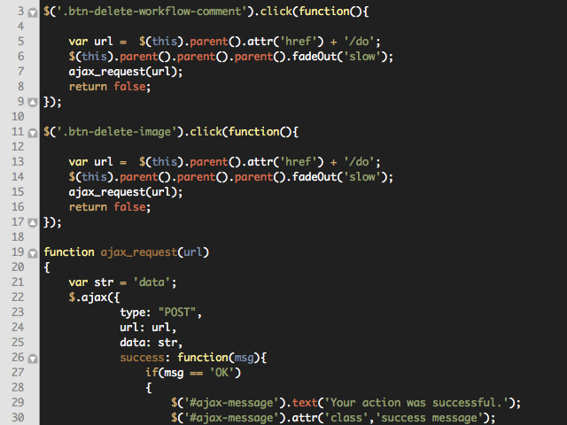
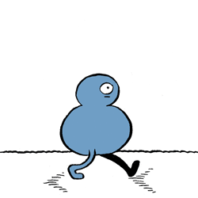

Introduction to WC
Created @boyney123

Who am I?
Lets go back...
Nothing really changes...

Things were simple...
Browsers matured

jQuery UI was added
$(function() {
$( "#accordion" )
.accordion({
header: "> div > h3"
})
.sortable({
axis: "y",
handle: "h3",
stop: function( event, ui ) {
// IE doesn't register the blur when sorting
// so trigger focusout handlers to remove .ui-state-focus
ui.item.children( "h3" ).triggerHandler( "focusout" );
// Refresh accordion to handle new order
$( this ).accordion( "refresh" );
}
});
});
jQuery was abused
Keep adding more and more...

Junk and huge applications
Our HTML, CSS can become messy...
FAST!
Confused...
'Its easy to write code a browser understands. Good developers write code people can understand'
- Addy Osmani
What If?
- We could change the way we think and write HTML, CSS and JS?
- We could clean up the mess and have everything componentised?
- We could encapsulate our HTML and share components without bloating our pages?
What I will cover?
- What are web components?
- What problems do they solve?
- The building blocks of web components
- How can you use them?
- Thinking Components
- Code Examples
- Extra Resources
What are they?
Web components are a set of emerging standards that allow us to extend HTML with our own vocabally
What does it solve?
Select Element
<select disabled>
<option value="volvo">Volvo</option>
<option value="saab">Saab</option>
<option value="mercedes">Mercedes</option>
<option value="audi">Audi</option>
</select>
Okay so whats the problem?
Lets look at navigation
Ext.js
Ext.require('Ext.tab.*');
Ext.onReady(function(){
// basic tabs 1, built from existing content
var tabs = Ext.createWidget('tabpanel', {
renderTo: 'tabs1',
width: 450,
activeTab: 0,
defaults :{
bodyPadding: 10
},
items: [{
contentEl:'script',
title: 'Short Text',
closable: true
},{
contentEl:'markup',
title: 'Long Text'
}]
});
// second tabs built from JS
var tabs2 = Ext.createWidget('tabpanel', {
renderTo: document.body,
activeTab: 0,
width: 600,
height: 250,
plain: true,
defaults :{
autoScroll: true,
bodyPadding: 10
},
items: [{
title: 'Normal Tab',
html: "My content was added during construction."
},{
title: 'Ajax Tab 1',
loader: {
url: 'ajax1.htm',
contentType: 'html',
loadMask: true
},
listeners: {
activate: function(tab) {
tab.loader.load();
}
}
},{
title: 'Ajax Tab 2',
loader: {
url: 'ajax2.htm',
contentType: 'html',
autoLoad: true,
params: 'foo=123&bar=abc'
}
},{
title: 'Event Tab',
listeners: {
activate: function(tab){
alert(tab.title + ' was activated.');
}
},
html: "I am tab 4's content. I also have an event listener attached."
},{
title: 'Disabled Tab',
disabled: true,
html: "Can't see me cause I'm disabled"
}
]
});
});
jQuery Tabs
<!doctype html>
<html lang="en">
<head>
<meta charset="utf-8">
<title>jQuery UI Tabs - Default functionality</title>
<link rel="stylesheet" href="//code.jquery.com/ui/1.11.0/themes/smoothness/jquery-ui.css">
<script src="//code.jquery.com/jquery-1.10.2.js"></script>
<script src="//code.jquery.com/ui/1.11.0/jquery-ui.js"></script>
<link rel="stylesheet" href="/resources/demos/style.css">
<script>
$(function() {
$( "#tabs" ).tabs();
});
</script>
</head>
<body>
<div id="tabs">
<ul>
<li><a href="#tabs-1">Nunc tincidunt</a></li>
<li><a href="#tabs-2">Proin dolor</a></li>
<li><a href="#tabs-3">Aenean lacinia</a></li>
</ul>
<div id="tabs-1">
<p>Proin elit arcu, rutrum commodo, vehicula tempus, commodo a, risus. Curabitur nec arcu. Donec sollicitudin mi sit amet mauris. Nam elementum quam ullamcorper ante. Etiam aliquet massa et lorem. Mauris dapibus lacus auctor risus. Aenean tempor ullamcorper leo. Vivamus sed magna quis ligula eleifend adipiscing. Duis orci. Aliquam sodales tortor vitae ipsum. Aliquam nulla. Duis aliquam molestie erat. Ut et mauris vel pede varius sollicitudin. Sed ut dolor nec orci tincidunt interdum. Phasellus ipsum. Nunc tristique tempus lectus.</p>
</div>
<div id="tabs-2">
<p>Morbi tincidunt, dui sit amet facilisis feugiat, odio metus gravida ante, ut pharetra massa metus id nunc. Duis scelerisque molestie turpis. Sed fringilla, massa eget luctus malesuada, metus eros molestie lectus, ut tempus eros massa ut dolor. Aenean aliquet fringilla sem. Suspendisse sed ligula in ligula suscipit aliquam. Praesent in eros vestibulum mi adipiscing adipiscing. Morbi facilisis. Curabitur ornare consequat nunc. Aenean vel metus. Ut posuere viverra nulla. Aliquam erat volutpat. Pellentesque convallis. Maecenas feugiat, tellus pellentesque pretium posuere, felis lorem euismod felis, eu ornare leo nisi vel felis. Mauris consectetur tortor et purus.</p>
</div>
<div id="tabs-3">
<p>Mauris eleifend est et turpis. Duis id erat. Suspendisse potenti. Aliquam vulputate, pede vel vehicula accumsan, mi neque rutrum erat, eu congue orci lorem eget lorem. Vestibulum non ante. Class aptent taciti sociosqu ad litora torquent per conubia nostra, per inceptos himenaeos. Fusce sodales. Quisque eu urna vel enim commodo pellentesque. Praesent eu risus hendrerit ligula tempus pretium. Curabitur lorem enim, pretium nec, feugiat nec, luctus a, lacus.</p>
<p>Duis cursus. Maecenas ligula eros, blandit nec, pharetra at, semper at, magna. Nullam ac lacus. Nulla facilisi. Praesent viverra justo vitae neque. Praesent blandit adipiscing velit. Suspendisse potenti. Donec mattis, pede vel pharetra blandit, magna ligula faucibus eros, id euismod lacus dolor eget odio. Nam scelerisque. Donec non libero sed nulla mattis commodo. Ut sagittis. Donec nisi lectus, feugiat porttitor, tempor ac, tempor vitae, pede. Aenean vehicula velit eu tellus interdum rutrum. Maecenas commodo. Pellentesque nec elit. Fusce in lacus. Vivamus a libero vitae lectus hendrerit hendrerit.</p>
</div>
</div>
</body>
</html>
Bootstrap
<ul class="nav nav-tabs" role="tablist">
<li class="active"><a href="#">Home</a></li>
<li><a href="#">Profile</a></li>
<li><a href="#">Messages</a></li>
</ul>
Repeating ourselfs
Web components could solve this problem
Common patterns in software
- Keep things simple
- Modular
- Encapsulated
- Single Responsibility
What is Web Components build up from?
Web components is simular to a team...
Web Components are build from
S.H.C.T
Four Building Blocks
- S - Shadow DOM
- H - HTML Imports
- C - Custom Elements
- T - Templates
S.H.C.T

Shadow DOM
Example : Shadow DOM
DemoKey Facts : Shadow DOM
- DOM and CSS Scoping
- Allows us to design apps in small chunks with a guarante
- You can use class names and IDs within the scope without conflict
- Powerful - No more !important from third parties
S.H.C.T
HTML Imports
Example : HTML Import
<link rel="import" href="ctm-speech-bubble.html">
Key Facts: HTML Import
- Bundle JS/HTML/CSS together
- Dependency management to web components
- All depdencies are replaced with a simple import
- Great to share and use components
S.H.C.T
Custom Elements
Example : Custom Element
<ctm-speech-bubble title="Hello" body='Hello and welcome to my brownbag session on Web Components'></ctm-speech-bubble>
<ctm-nav-bar tabs='[{"name": "Home"}, {"name": "Motor"}]'>
</ctm-nav-bar>
Demo
Key Facts: Custom Elements
- Readable
- Meaningful HTML
- DSH
Sofa Sales..
D.S.H
Domain Specific HTML
<ctm-speech-bubble title="Hello" body='Hello and welcome to my brownbag session on Web Components'></ctm-speech-bubble>
<ctm-nav-bar tabs='[{"name": "Home"}, {"name": "Motor"}]'>
</ctm-nav-bar>
S.H.C.T
Templates
Example : Template
<template>
<link rel="stylesheet" href="david-boyne.css" />
<img style="border-radius: {{radius}}%; width: {{width}}%" src="./david-boyne.jpg" alt="">
</template>
Demo
Key Facts : Templates
- Parsed not rendered - does nothing until you use it
- Elements inside are not requests/used until its needed (i.e img, video tag)
- Out of scope - DOM doesnt even look at at
Browser Support?
300 Million...

What about old browsers?
Screw old browsers

Whos using Web Components today?
- GitHub uses custom elements local-time using polymer
- ChromeOS keyboard is a web component
- Media player in ChromeOS is a web component
How can you use Web Components today?
- Vanilla JS
- Polymer (Google)
- X-Tags (Mozilla)
- Bosonic (?)
More resources
Summary
The Past, Future and Evolution
- Thinking Component
- Change the way we think about writing HTML, CSS and JavaScript
- Don't recreate the wheel
- Get more done with less
- More pictures of me wasted...